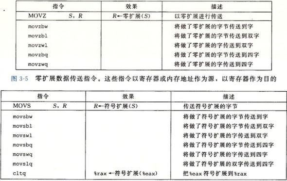

我们知道C源程序经过预处理、编译、汇编和链接生成了最终的可执行文件，而本章研究的对象就是源程序(*.c)经过预处理和编译后生成的汇编程序(*.s)。 而处理器看上去就是照着汇编程序在运行（实际上会有乱序执行等操作）。在正式开始整理前，还应当有一些初步的认识。
首先，csapp第三版采用的汇编语言是x86-64指令集，本整理自然也是采用x86-64指令集。由于x86-64指令集是向后（下）兼容（backward compatible 也就是说，Intel保证老版本CPU的指令集新版本一定还保留着，这种只增加不删除的策略，保证了我们换CPU时，不需要更换很多软件）， 于是x86-64指令集显得冗杂繁琐。当下比较热门的指令集RISC-V则是一种精简指令集，具有架构简单的特点。但是现在主流电脑仍是x86-64和ARM架构，学习一些X86-64指令还是有必要的。 顺带一提，x86-64指令还有ATT风格和Intel风格，gcc默认生成ATT风格，csapp也是采用了ATT风格。
其次，理应要掌握三个重要工具（操作系统：linux；指令集架构：x86-64）。
接下来从两个重要概念入手，学习汇编指令，实现控制（control）和过程（procedure），最后再一瞥浮点代码。
CPU中的算术逻辑单元（ALU，arithmetic/logic unit）只负责运算，而ALU直接访问的数据来自CPU中的寄存器们。 但是寄存器大小有限，更多的数据要存储在内存里。于是要有内存和寄存器进行数据交换。为了更快进行数据交换，需要设计缓存（cache）。 一般有三级缓存，寄存器是一级缓存的缓存，一级缓存和二级缓存又分别是二级缓存和三级缓存的缓存。三级缓存则是主（内）存的缓存。 各级缓存读写速度和价格区别是直观的，也不赘述了。
下面讨论寄存器们：
如上图所示，x86-64的CPU有十六个64位的整型寄存器。对于它们的低位字节也有各自的名称。每个寄存器有着特定的职能：%rsp（栈指针stack pointer）一直指向运行时栈的顶端； %rax是储存返回值的，汇编程序中ret指令就返回%rax中的值；1st——6th argument存储函数的参数（对于那些多于六个的参数需要利用栈来存储）； callee saved“被调用者保存”也就是被调用者（子函数）自己想办法帮调用者（父函数）进行备份，具体方法就是子函数在覆盖他们之前，先进行入栈备份，等子函数返回时，再出栈还原父函数运行时这些寄存器上的旧值； caller saved“调用者保存”也就是调用者（父函数）视情况备份好数据，否则可能会被被调用者（子函数）所修改。 特别的，%rbp还有帧指针（frame pointer）的功能，即指向栈帧的最高地址，但是只有变长栈帧才会使用帧指针。
对于操作数格式（operand form）有如下的约定：

举例来说$0x100就是0x100，ra就是ra存的值，0x100则是在0x100地址上存的值，0x1(%rax,%rdx,4)就是在1+%rax+4*%rdx地址上存的值。注意这里的寄存器大小都是64位的。
除了整型寄存器，CPU还包含了一组单个位的条件码寄存器（a set of single-bit condition code registers），用来描述算术逻辑运算。 本章共提及了五个条件码：
举例来说，判断有符号数A>B，就是判断B-A运算的SF^OF。事实上条件码并不能被我们直接访问，学习汇编语言也不用掌握条件指令背后的条件码。
csapp介绍的浮点体系结构是AVX2指令集，将浮点数存在YMM的低32位(for float)或者64位中(for double)。书上还称这些寄存器叫媒体寄存器（media register）（似乎YMM寄存器本意是为了处理图像影像的

CPU利用PC(program counter 程序计数器)来记录下一条指令的位置，而存储的寄存器就叫%rip。
内存中如何储存数据，其中一个模型是堆，处理动态内存分配（如malloc），csapp并没有在第三章涉及，而是放在了第九章虚拟内存里。 另一个模型便是栈帧（stack frame），如下图所示：
值得注意的是，运行时栈的栈顶在低地址位。此外应该指出，很多函数是没有完整的栈帧结构的，因为没有必要。
注意：

注意：
注意：
注意：
之前提到条件码无法被直接访问，也就是说我们不能直接获取CF、OF这些条件码的值。但是可以通过CMP和TEST指令来设置条件码且不修改寄存器，接着通过以下三种方法来利用条件码： （1）通过SET使一个字节为0或1；（2）通过jump实现跳转；（3）通过CMOV是实现条件数据传送。利用这些条件控制指令，可以实现if、while、for、switch等语句。
在执行完CMP和TEST就可以利用SET指令来修改低位单字节寄存器了，然后在利用movl指令将结果再保存在32位寄存器里。注意这些指令都有同义词，就是两个含义相同。
注意：
注意：
实现条件分支有两个方法——条件控制（conditional control）与条件传送（conditional move）。具体如下面计算x与y的绝对值：
实际情况下生成的汇编程序将如代码c所示。处理器在执行一条指令时，会经历一系列过程，而每个过程执行所需操作的一小部分， 通过重叠连续指令可以提高性能，这个方法称为流水线（Pipelining）。 但是当遇到条件需要跳转时，只有知道跳转结果才能确定指令顺序，才能使用流水线。现在处理器采用分支预测的方法来预测跳转的结果， 即处理器会预测当前跳转的结果，然后将预测的指令进行流水线。如果预测正确则会提高性能，如果预测错误，就需要把之前流水线清空， 然后在正确的分支重新开始流水线，会损失很多性能。条件控制的方法就会存在这个问题，由于存在不确定的跳转， 所以处理器会通过分支预测来将填满流水线，如果分支预测错误，就使得性能受损。而用条件传送来实现条件分支，不会先判断跳转， 而是先将两个分支的结果进行计算，将结果分别保存在两个寄存器中，然后再通过条件传送指令CMOV将正确结果传送到输出的寄存器中。
可以翻译成while循环，化归成3.3.6。不赘述了。
如果case较少或者case的跨度很大，switch汇编后会采用if else来执行。但如果case比较集中，gcc会生成跳转表（jump table）来实现switch语句。 通过跳转表，switch能直接根据跳转表获得代码块地址，使得执行switch语句的时间与分支数目无关。如下例所示：
源程序：
汇编程序：
在汇编程序的角落里可以找到的跳转表：
3.4节研究函数P调用函数Q，函数Q再返回函数P这一过程。主要包含三个机制：
下面开始详细分析调用函数call_proc()后发生的复杂故事。
如上图所示，call_proc的第2行将%rsp减32字节，给栈帧分配了空间。随后3-6行建立了local variables区域，7-9行建立了argument build area，10-15行设置了六个参数寄存器。 一个call proc指令把PC置到proc代码的第一行，%rsp减8，存上call_proc第17行代码的地址。 在proc里利用六个参数寄存器和call_proc栈帧中的argument build area的值进行计算，修改了call_proc栈帧中的local variables。 一个ret将PC置为call_proc的第17行，%rsp加8回到call proc前的位置。 随后call_proc利用内存中修改过的数据进行计算，将最后的计算结果于第23行存到了%rax中。 最后%rsp加32字节，释放call_proc的栈帧空间。一个ret将会回到call_proc的父函数。
显见在分配空间前利用pushq可以保存register在saved register区域。释放内存后再popq回去，register又变成最初的样子了。
之前所有介绍的栈帧的申请，编译器都能提前知道栈帧的大小，从而可以直接分配一个固定大小的区域。但是对于一些栈大小是变化的函数，就需要支持变长栈帧。 比如说函数f(long n){long a[n];}这样子的函数就无法提前分配内存。为了管理变长栈帧，x86-64代码使用%rbp作为帧指针。进入函数时，先将其存入到register saved，然后将当前的栈指针%rsp的值赋予%rbp， 则函数最后可直接通过将%rbp的值赋予%rsp就能释放变长的栈帧，并且通过register saved来重置%rbp的值。具体例子就略去。
这么说来当初程序设计课上说定义数组大小一定要用常量（i.e. int n; cin>>n; int a[n];是错误的，应该用int *a = new[n]）果然不完全正确。现代编译器应该能通过变长栈帧来处理这个问题。 当初认为是编译器会自己把它翻译成new指令也是想当然了。不过古董编译器可能的确不支持int a[n]的操作。
csapp介绍的浮点数用了AVX2指令集。浮点数的在机器级表示的层次上，与整型和指针有很大的不同。我也不整理了，移步csdn。
第三章还介绍了许多东西，这里也略带一提。
主要讲了类似声明为char a[3]的a数组，调用者却访问或者修改了a[5]的数据。程序的堆栈是缓冲区的一种。如果攻击者可以利用缓冲区溢出，写攻击代码(exploit code)覆盖了一些其他内存空间的数据， 使得攻击者获取了被攻击主机的控制权。csapp讲了三种应对措施。1）stack randomization：同一份代码在不同时间不同电脑的栈帧空间地址不同； 2）stack corruption detection：在该函数栈帧中的局部变量区与栈状态（返回地址和寄存器保存区）之间存入一个随机的金丝雀值（Canary），然后在恢复寄存器状态和返回返回地址之前，会检测该值是否发生变化，如果发生变化，则程序异常终止。 比如：movq %fs:40, %rax把canary值赋到%rax中；再把%rax赋到栈帧上；一些指令后，把栈帧该处的值赋会%rax；最后xorq %fs:40, %rax可以检测canary值是否被修改。 3）limiting executable code regions：使用只读的内存区。
Suppose a processor always fetched 8 bytes from memory with an address that must be a multible of 8. If we can guarantee that any double will be aligned to have its address be a multiple of 8, then the value can be read or wirtten with a single operation. 于是乎可以得到对齐原则：任何K字节的基本对象的地址必须是K的倍数。
对于struct，编译器可能会在中间插入空袭，来满足各自对内存地址的要求。考虑struct S{int i; char c; int j;}; S的内存分配将如下：
| offset | 0 | 1 | 2 | 3 | 4 | 5 | 6 | 7 | 8 | 9 | 10 | 11 |
|---|---|---|---|---|---|---|---|---|---|---|---|---|
| contents | i | c | / | j | ||||||||